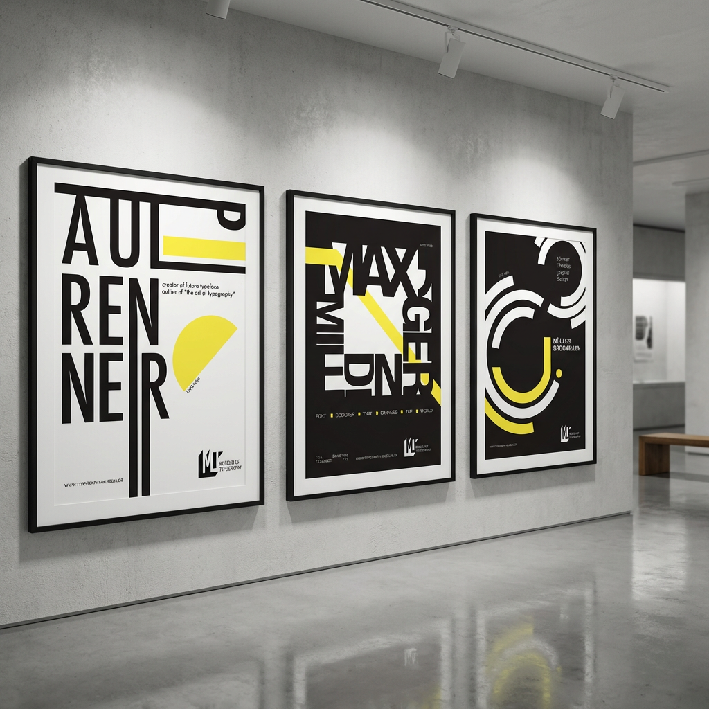

Museum of
Typography
Identity & Brand System
Identity & Brand System
The brief called for a full visual identity system for a typographic institution, one that could communicate authority and cultural relevance without defaulting to the expected academic aesthetic.
I wanted the identity to do what the museum does, make type feel worth paying attention to. So the concept became simple: the brand itself had to work as a typographic specimen. Every decision, the logomark, the grid, the color system, had to demonstrate the museum's argument rather than just name it. Strict black and yellow, maximum contrast, no decoration. The expressiveness comes entirely from proportion and weight.
The same thinking carried through into application. Business cards, wayfinding, ticketing, retail packaging, exhibition collateral, each one treated as part of the same system, held to the same standard. If the brand is about the power of letterforms, every touchpoint has to prove it.
The result is a brand system that feels institutional without being closed, expressive without losing discipline.



.png)
.png)
.png)